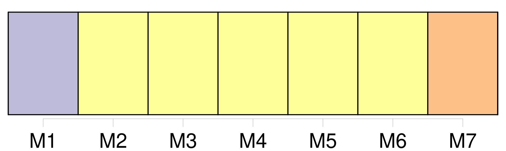
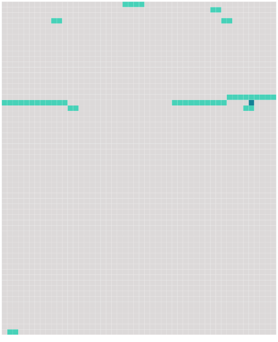

Longueur nb maillons : 10 mentions |
  |
CHAPITRE III [2 phrases] Le transporteur est responsable [du dommage] survenu en cas de destruction, perte ou avarie de bagages enregistrés, par cela seul que le fait qui a causé la destruction, la perte ou l'avarie s'est produit à bord de l'aéronef ou au cours de toute période durant laquelle le transporteur avait la garde des bagages enregistrés. Toutefois, le transporteur n'est pas responsable si et dans la mesure où [le dommage] résulte de la nature ou du vice propre des bagages.
Dans le cas des bagages non enregistrés, notamment des effets personnels, le transporteur est responsable si [le dommage] résulte de sa faute ou de celle de ses préposés ou mandataires. [20 phrases]
Pour [les dommages visés au paragraphe 1 de l'article 17 et ne dépassant pas 100000 droits de tirage spéciaux par passager] , le transporteur ne peut exclure ou limiter sa responsabilité. [1 phrases]
Le transporteur n'est pas responsable [des dommages visés au paragraphe 1 de l'article 17] dans la mesure où [ils] dépassent 100000 droits de tirage spéciaux par passager, s'il prouve : [48 phrases]
Si une action est intentée contre un préposé ou un mandataire du transporteur à la suite d' [un dommage] visé par la présente convention, ce préposé ou mandataire, s'il prouve qu'il a agi dans l'exercice de ses fonctions, pourra se prévaloir des conditions et des limites de responsabilité que peut invoquer le transporteur en vertu de la présente convention. |
 |
La ressource peut être téléchargée sur la page Ortolang
Si vous avez des questions ou vous voyez des erreurs, merci d'envoyer un mail à silvia.federzoni89@gmail.com
Site développé par S. Federzoni (contact)